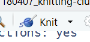

tl;dr
I made a couple of training resources about R Markdown for reproducibility:
- Knitting Club (see the slides or source)
- Quick R Markdown (see the slides or source).
Reproducibility
It’s often important to recreate and verify prior work, as well as update it in future as data changes. In government we’re using a code-based approach called Reproducible Analytical Pipelines (RAP) to automate and make reproducible our statistical publications; speeding up our work while reducing error and building confidence.
R has many packages that help with reproducibility. Take a look at the CRAN Task View for some examples.
R Markdown is a particularly useful and ubiquitous tool. It allows you to execute R code inside your document and ‘knit’ it into a readable report with the {knitr} package by Yihui Xie. You can re-run the code, or alter the parameters and re-knit it without stress. This is much faster and less error-prone versus a workflow that moves data between a database, spreadsheet and word processor.
The R Markdown bible has been released recently by Yihui Xie, JJ Allaire and Garrett Grolemund and is the go-to resource for creating reports, presentations, dashboards, websites, books and blogs in R Markdown.
Resources
I made some short resources earlier in the year to help beginners in my organisation learn about R Markdown. They’re a little rough, but got the job done. I’m unlikely to update them in future, but you can go to the source on GitHub and leave an issue, or make a pull request.
1. Knitting Club
Knitting Club is a document about R Markdown and {knitr} made with R markdown and {knitr}. It’s freely available on the web and you can find the code on GitHub.
I presented this document in a cross-department Coffee & Coding session in April 2018. The blurb was:
Do you have woolly knowledge of document creation in R? Needle little help? Matt Dray will drop some purls of wisdom and unravel a yarn about the knitty-gritty of R Markdown and the ‘knitr’ package for one-click document creation. Don’t get the point? If a deadline is looming, you’ll avoid a stitch-up from endless re-running of code and copy-pasting of outputs into a Word document. Come along and have a ball!
Ha.
2. Quick R Markdown
If the Knitting Club document is too long, you can check out this shorter slide-based introduction to R Markdown below. You can also access the slides alone and find the source on GitHub.
Environment
Session info
Last rendered: 2023-08-08 17:55:32 BSTR version 4.3.1 (2023-06-16)
Platform: aarch64-apple-darwin20 (64-bit)
Running under: macOS Ventura 13.2.1
Matrix products: default
BLAS: /Library/Frameworks/R.framework/Versions/4.3-arm64/Resources/lib/libRblas.0.dylib
LAPACK: /Library/Frameworks/R.framework/Versions/4.3-arm64/Resources/lib/libRlapack.dylib; LAPACK version 3.11.0
locale:
[1] en_US.UTF-8/en_US.UTF-8/en_US.UTF-8/C/en_US.UTF-8/en_US.UTF-8
time zone: Europe/London
tzcode source: internal
attached base packages:
[1] stats graphics grDevices utils datasets methods base
loaded via a namespace (and not attached):
[1] htmlwidgets_1.6.2 compiler_4.3.1 fastmap_1.1.1
[4] cli_3.6.1 tools_4.3.1 htmltools_0.5.5
[7] xaringanExtra_0.7.0 rstudioapi_0.15.0 yaml_2.3.7
[10] rmarkdown_2.23 knitr_1.43.1 jsonlite_1.8.7
[13] xfun_0.39 digest_0.6.33 rlang_1.1.1
[16] evaluate_0.21 Reuse
CC BY-NC-SA 4.0